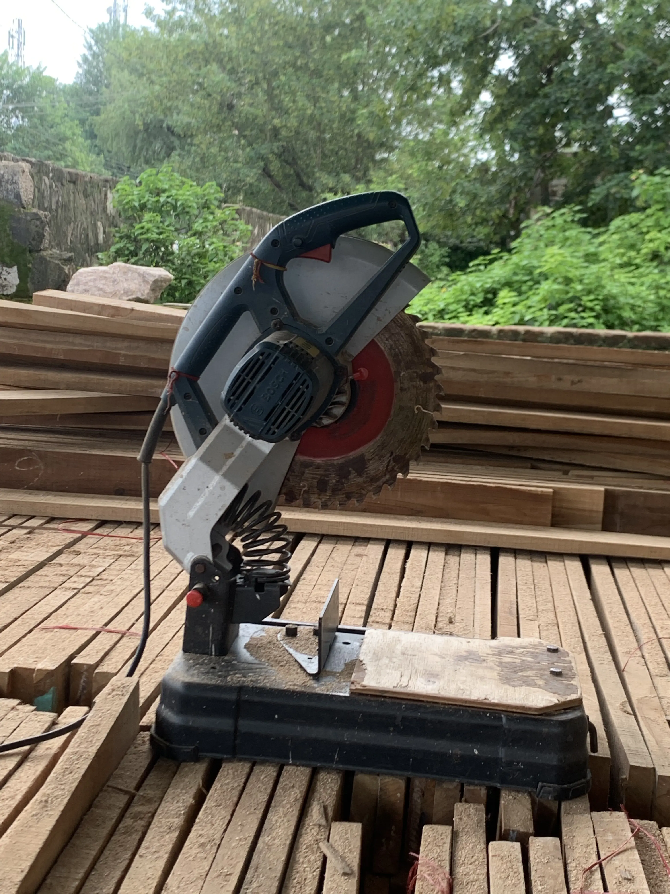
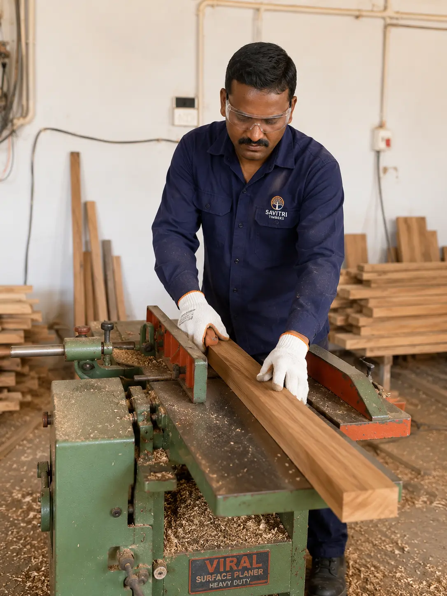
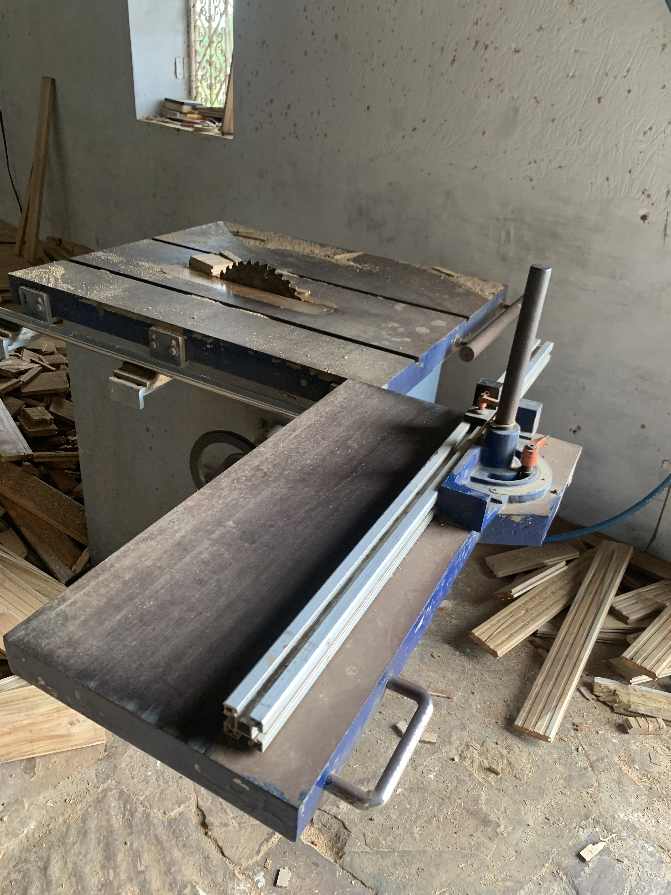
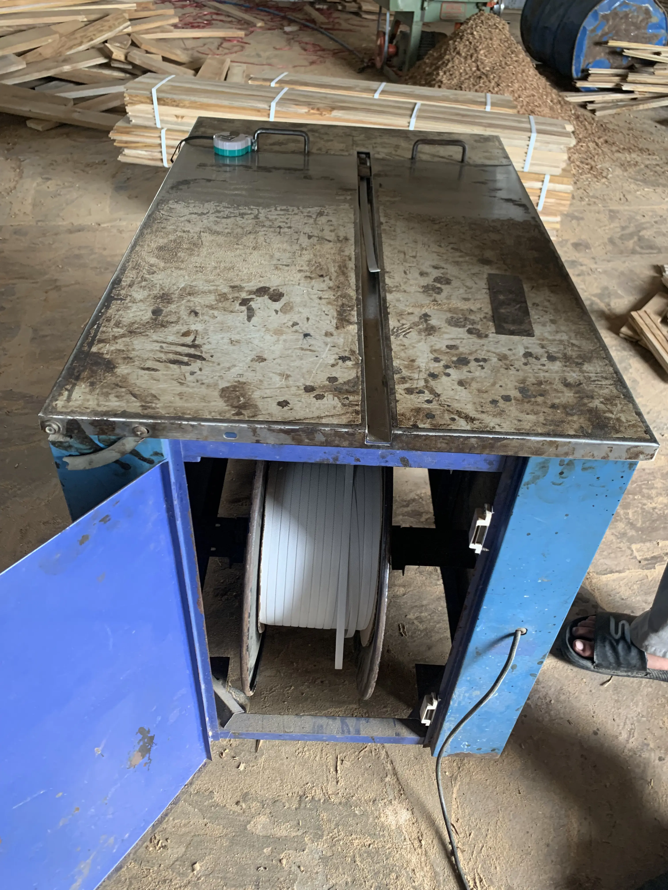

Precision Machining
Controlled machine setup for accurate dimensional preparation of hardwood boards.
Manufacturing · Rajasthan, India
Premium hardwood processing and precision manufacturing for sports flooring, hardwood components and OEM partners.
Our manufacturing workflow is structured around careful material handling, precise processing and considered quality checks.
Dedicated machinery and multi-stage processing for high-performance hardwood flooring requirements.
Controlled machine setup for accurate dimensional preparation of hardwood boards.
Longitudinal and short-end profiling capability within established machinery parameters.
Dedicated machinery for producing precise side and end T&G locking profiles.
Manufacturing of specialized hardwood components for sports flooring systems.
Expertise in handling and machining diverse hardwood species for industrial applications.
Packaging and printing support for private-label and OEM flooring requirements.
Establishing flat reference faces and squared edges before final profiling.
Flexible processing for specific width, thickness, and length requirements.

Incoming raw material arrives seasoned and is stored in a dry, airy area to maintain stability before processing begins.

The BOSCH GCO 220 Professional Cut-Off Saw is used for the initial length cutting of timber boards to required dimensions.

The VIRAL Heavy-Duty Surface Planer & Jointer establishes a flat reference face and squared edge, essential for subsequent machining accuracy.

The HOLYISO MBQ523A performs four-side machining and longitudinal profiling, producing side tongue-and-groove and relief profiles.

An Industrial Sliding Table Saw prepares the short edge of the boards for the subsequent end-profiling operations.

The JAI Modula J-3400.in Spindle Moulder is used for short-end tongue-and-groove and width-side custom profiles.
Every board undergoes visual and touch/feel inspection, alongside moisture-meter checks as part of final material inspection.

The Mahalaxmi Semi-Automatic Strapping Machine secures finished floorboards into bundles for safe handling and dispatch.

Finished and packaged material is prepared for dispatch according to customer requirements and project timelines.
Flat reference face and squared edge established before subsequent machining to ensure dimensional stability.
Controlled machine setup for longitudinal board preparation and profiling across all four surfaces.
Lengthwise and short-end locking profiles produced through dedicated machinery for reliable installation.
Visual and touch/feel inspection of every finished board as part of final workmanship and quality checks.
Moisture-meter inspection of finished material to verify seasoning and suitability for the intended environment.
Finished material checked for consistency and quality before final packaging and dispatch.
We support manufacturing requirements for flooring brands, importers, and private labels with a focus on reliable hardwood processing.
Packaging and printing support can be provided for applicable OEM and private-label requirements, ensuring project-ready delivery.
Actual hardwood processing experience across diverse species and industrial applications.
Specialized equipment for distinct machining, profiling, and preparation operations.
A disciplined sequence from raw material preparation to final inspection and dispatch.
Longitudinal and short-end tongue-and-groove capability for high-performance flooring.
Packaging and printing support for private-label requirements and project-specific branding.
Authentic machinery and manufacturing-environment evidence demonstrating actual capability.
Share your flooring dimensions, profile or private-label requirement with our team.